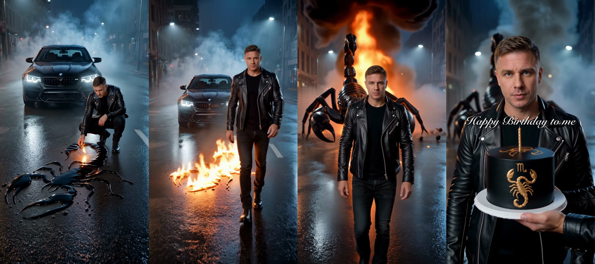

Керемет, вот самый простой способ повторить мой ролик. Загружаете в Kling мой ролик и своё фото, нейросеть сама ставит вас на моё место. Ночь, дождь, BMW, взрыв, гигантский скорпион и торт остаются как у меня

Edit @Video1. Replace the man in @Video1 with the woman from @Image1 in every shot: her face, hair and body exactly as in @Image1, natural skin, real proportions. She wears the same black leather biker jacket, black top, black jeans and black boots as the man. She does exactly the same actions as the man, at the same moments: crouches and lights the scorpion with the lighter, walks toward the camera, tosses the lighter over her shoulder, walks through the slow-motion explosion with the giant scorpion behind her, blows out the candle on the cake and looks straight into the camera. Keep everything else unchanged, including the background, the black BMW, the fire, the explosion, the giant scorpion, the cake and the hand holding it, the camera movements, the slow motion, the lighting, the audio and the video duration. No text, no subtitles.
Меняет меня на вас во всех кадрах, а всё остальное оставляет как в моём ролике: улицу, машину, огонь, взрыв, скорпиона, торт, замедление и звук. Менять в нём ничего не нужно
Надпись ставим сами в Instagram: нейросеть часто путает буквы в словах
Happy Birthday to me
Возьмите другое фото: крупнее, при дневном свете, без фильтров, лицо прямо в камеру. И запустите ещё раз с тем же промптом
Проверьте две вещи: промпт начинается со слов «Edit @Video1», а мой ролик загружен первым, раньше фото
В настройках поставьте длину 18 секунд и запустите ещё раз
Напишите в чат потока, что получилось, и приложите ролик. Разберём
Скорпионы рулят 🦂
Иван · вопросы пишите в чат потока